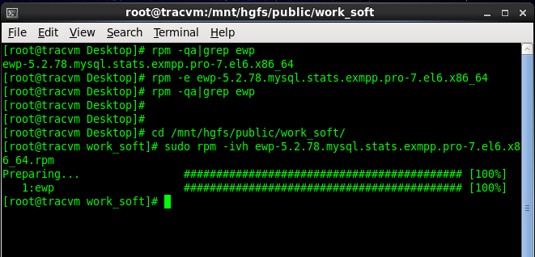
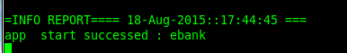
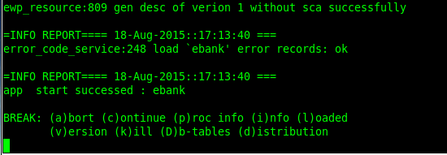
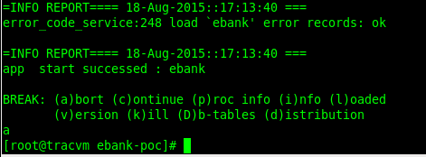
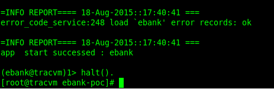
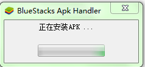
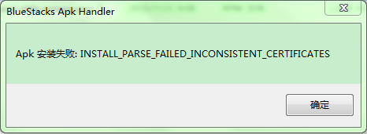

虚拟机安装部分请参考用户文档-虚拟机安装
1.将.rpm格式的EWP包放在共享文件夹中.
2.打开虚拟机，进入CentOS系统。(注:必须是root账户，密码为rytong2010)
3.打开终端，输入以下命令rpm -qa|grep ewp，此命令是查看当前系统中安装的ewp是什么版本的;
如果检索到的ewp包名称为example.rpm;则下一步输入命令rpm -e example,此命令是删除ewp.
4.输入命令sudo rpm -ivh ewp包的名称.rpm，此命令用于安装ewp包。

注解: 上图只是示范，安装rpm包时，需要进入rpm包所在路径；另外，删除旧的ewp包时，在命令中不写.rpm,否则出现异常。
1.当你使用命令行启动ewp服务器的时候，你需要先进入项目代码所在的目录，我们需要把该文件夹放到共享目录下面。
假设虚拟机共享的目录是work，存放代码的文件夹是ebank-poc,这样的话，可以使用下面的命令进入项目代码所在的目录
cd /mnt/hgfs/work/ebank
2.需要使用configure命令配置一下项目代码：
./configure --with-debug
3.配置成功后，使用make命令来编译代码，生成可执行的二进制文件：
make
4.之后使用启动脚本，就可以启动ewp服务器了：
./iewp

如果想关闭服务器的话，可以直接使用Ctrl+C来终端程序。
在启动服务的终端界面，同时按住Ctrl和C按键，程序会给出提示：

我们按照提示，输入a，然后回车来中断服务，结果如下：

也可以使用halt()停止服务。

1.模拟器使用BlueStacks，进入官网http://www.bluestacks.cn/index.asp下载。
2.双击上一步已经下载完毕的安装程序，安装目录可自定义选择，其它选项默认就可以;
选择程序可选功能选项，其默认为全选，建议不修改.
开启Android模拟器，然后右击emp_editor.apk，选择Open with BlueStacks APK Installer选项进行安装。

1.启动ewp服务失败
原因:ewp目录中缺少log文件夹
解决方案:在ewp安装目录中新建一个空的log文件夹即可。
2.BlueStacks模拟器可能安装失败
原因:该软件对电脑配置(显卡，内存等)有一定要求。
解决方案:可以先安装软件给力助手,进行解决。
3.apk安装失败。

原因1:未知异常
解决1:启动给力助手，在模拟器设置选项中点击一键关联APK,然后双击apk文件即可。
原因2:apk新旧版本冲突。
解决2:将模拟器中的apk先卸载，然后再进行安装。